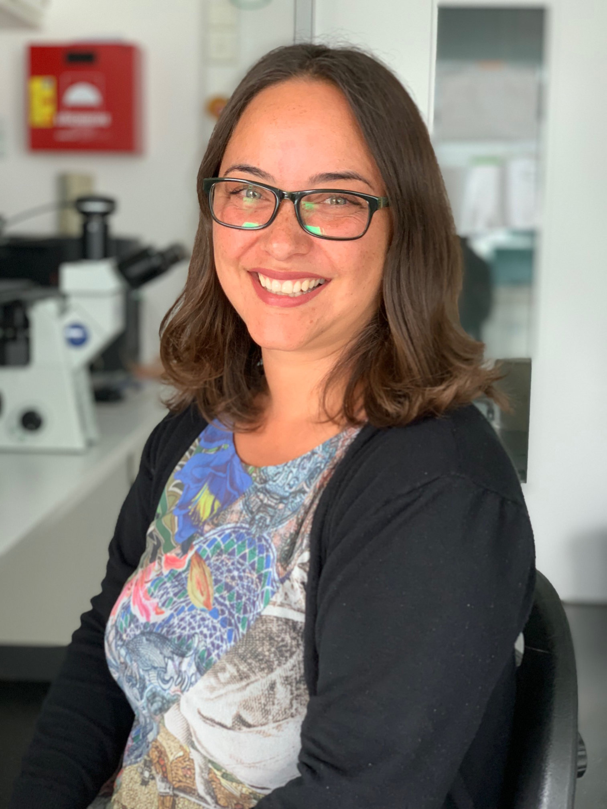

About Me

I am a cell and molecular biologist specialized in host–pathogen interactions at the Institute of Parasitology, Justus Liebig University Giessen (JLU). My research investigates how intracellular apicomplexan parasites—including Toxoplasma gondii, Cryptosporidium parvum, Besnoitia besnoiti, and Eimeria bovis—modulate host cell cycle progression, innate immune responses, and cellular metabolism.
Latest Publication
Adverse impact of acute Toxoplasma gondii infection on host cell cycle and genome integrity
Rojas-Barón L, Hermosilla C, Taubert A, Velásquez ZD • The FEBS Journal
This study demonstrates how acute T. gondii infection disrupts host cell cycle progression and compromises host genomic stability during intracellular replication.
Read Full Article (DOI) →Press Release

Research Highlighted in the Media
International press coverage featuring our recent findings on acute Toxoplasma gondii infection and male fertility.
Read Press Article →Featured by Science Communicators
Independent science communicators and infectious disease podcasts discussing our 2025 FEBS Journal findings for a broader public audience:
- Dr. Ben Miles (Science Communicator): "Scientists Discover Parasite Decapitates Sperm" — Short-form science breakdown. Watch Short →
- Outbreak News Today (Host: Robert Herriman, Guest: Prof. William Sullivan): "Toxoplasma gondii and beheaded sperm" — In-depth microbiology & immunology interview. Watch Interview →
- Science Explainer Feature: "How a Common Parasite Attacks Human Sperm | Toxoplasma Gondii" — Educational video summary. Watch Video →
Key Research Areas
Click on any research area below to expand its peer-reviewed publications.
Host Cell Cycle & Genome Stability
Dissecting how intracellular parasites arrest or dysregulate host mitosis, cytokinesis, and DNA damage responses.
Click to view/hide publications (8) ↓
- Velásquez ZD, Rojas-Baron L, Conejeros I, Hermosilla C, Taubert A (2024). Toxoplasma gondii infection induces early host cell cycle arrest and DNA damage in primary human host cells by a MYR1-dependent mechanism. Commun Biol, 7(1), 1637. [DOI]
- Rojas-Baron L, Senk K, Hermosilla C, Taubert A, Velásquez ZD (2024). Toxoplasma gondii modulates the host cell cycle, chromosome segregation, and cytokinesis irrespective of cell type or species origin. Parasit Vectors, 17(1), 180. [DOI]
- Rojas-Barón L, Hermosilla C, Taubert A, Velásquez ZD (2024). Toxoplasma gondii infection-induced host cellular DNA damage is strain-dependent and leads to the activation of the ATM-dependent homologous recombination pathway. Front Cell Infect Microbiol, 14, 1374659. [DOI]
- Rojas-Barón L, Hermosilla C, Taubert A, Velásquez ZD (2024). Toxoplasma gondii Me49 and NED strains arrest host cell cycle progression and alter chromosome segregation in a strain-independent manner. Front Microbiol, 15, 1336267. [DOI]
- Velásquez ZD, Rojas-Barón L, Larrazabal C, Salierno M, Gärtner U, Pervizaj-Oruqaj L, Herold S, Hermosilla C, Taubert A (2022). Neospora caninum Infection Triggers S-phase Arrest and Alters Nuclear Characteristics in Primary Bovine Endothelial Host Cells. Front Cell Dev Biol, 10, 946335. [DOI]
- Velásquez ZD, López-Osorio S, Waiger D, Manosalva C, Pervizaj-Oruqaj L, Herold S, Hermosilla C, Taubert A (2021). Eimeria bovis infections induce G1 cell cycle arrest and a senescence-like phenotype in endothelial host cells. Parasitology, 148(3), 341–353. [DOI]
- Velásquez ZD, Lopez-Osorio S, Pervizaj-Oruqaj L, Herold S, Hermosilla C, Taubert A (2020). Besnoitia besnoiti-driven endothelial host cell cycle alteration. Parasitol Res, 119(8), 2563–2577. [DOI]
- Velásquez ZD, Conejeros I, Larrazabal C, Kerner K, Hermosilla C, Taubert A (2019). Toxoplasma gondii-induced host cellular cell cycle dysregulation is linked to chromosome missegregation and cytokinesis failure in primary endothelial host cells. Sci Rep, 9(1), 12496. [DOI]
Innate Immunity & NETosis
Investigating neutrophil extracellular trap (NET) extrusion, monocyte activation, and immune evasion under physioxia.
Click to view/hide publications (11) ↓
- Dusch A, Conejeros I, Velásquez ZD, Hermosilla C, Taubert A (2026). Haemocyte-Derived Innate Immune Reactions of the Giant African Snail (Lissachatina fulica) Against the Lungworm Angiostrongylus vasorum. Animals, 16(14), 2150. [DOI]
- Hanke D, Velásquez ZD, Büttner K, Krueger A, Ross R, Hecker A, Mazurek S, Grau V, Taubert A, Hermosilla C, Richter K, Conejeros I (2025). Early responses of primary human and bovine monocytes, monocytic THP-1 cells and THP-1 cell-derived macrophages to vital Toxoplasma gondii tachyzoites. Front Immunol, 16, 1683634. [DOI]
- Conejeros I, Velásquez ZD, Espinosa G, Rojas-Baron L, Grabbe M, Hermosilla C, Taubert A (2025). AMPK and CAMKK activation participate in early events of Toxoplasma gondii-triggered NET formation in bovine polymorphonuclear neutrophils. Front Vet Sci, 12, 1557509. [DOI]
- Conejeros I, Velásquez ZD, Rojas-Barón L, Espinosa G, Hermosilla C, Taubert A (2024). The CAMKK/AMPK Pathway Contributes to Besnoitia besnoiti-Induced NETosis in Bovine Polymorphonuclear Neutrophils. Int J Mol Sci, 25(15), 8442. [DOI]
- Grabbe M, Conejeros I, Velásquez ZD, Hasheminasab SS, Kamena F, Wehrend A, Gärtner U, Taubert A, Hermosilla CR (2023). Cryptosporidium parvum-induced neutrophil extracellular traps in neonatal calves is a stage-independent process. Front Vet Sci, 10, 1256726. [DOI]
- Velásquez ZD, Peixoto R, Gärtner U, Hermosilla C, Taubert A, Conejeros I (2023). Dynamics of cell cycle proteins involved in Toxoplasma gondii-induced bovine NET formation. Front Immunol, 14, 1125667. [DOI]
- Conejeros I, López-Osorio S, Zhou E, Velásquez ZD, Del Río MC, Burgos RA, Alarcón P, Chaparro-Gutiérrez JJ, Hermosilla C, Taubert A (2022). Glycolysis, monocarboxylate transport, and purinergic signaling are key events in Eimeria bovis-induced NETosis. Front Immunol, 13, 842482. [DOI]
- Grob D, Conejeros I, López-Osorio S, Velásquez ZD, Segeritz L, Gärtner U, Schaper R, Hermosilla C, Taubert A (2021). Canine Angiostrongylus vasorum-Induced Early Innate Immune Reactions Based on NETs Formation and Canine Vascular Endothelial Cell Activation In Vitro. Biology, 10(5), 427. [DOI]
- Grob D, Conejeros I, Velásquez ZD, Preußer C, Gärtner U, Alarcón P, Burgos RA, Hermosilla C, Taubert A (2020). Trypanosoma brucei brucei Induces Polymorphonuclear Neutrophil Activation and Neutrophil Extracellular Traps Release. Front Immunol, 11, 559561. [DOI]
- Zhou E, Silva LMR, Conejeros I, Velásquez ZD, Hirz M, Gärtner U, Jacquiet P, Taubert A, Hermosilla C (2020). Besnoitia besnoiti bradyzoite stages induce suicidal- and rapid vital-NETosis. Parasitology, 147(4), 401–409. [DOI]
- Conejeros I, Velásquez ZD, Grob D, Zhou E, Salecker H, Hermosilla C, Taubert A (2019). Histone H2A and Bovine Neutrophil Extracellular Traps Induce Damage of Besnoitia besnoiti-Infected Host Endothelial Cells but Fail to Affect Total Parasite Proliferation. Biology, 8(4), 78. [DOI]
- Zhou E, Conejeros I, Velásquez ZD, Muñoz-Caro T, Gärtner U, Hermosilla C, Taubert A (2019). Simultaneous and Positively Correlated NET Formation and Autophagy in Besnoitia besnoiti Tachyzoite-Exposed Bovine Polymorphonuclear Neutrophils. Front Immunol, 10, 1131. [DOI]
Host–Parasite Metabolism & Biology
Mapping metabolic reprogramming, calcium signaling, and antiparasitic targets during apicomplexan development.
Click to view/hide publications (12) ↓
- Larrazabal C, Grob D, Velásquez ZD, Hermosilla C, Taubert A, Conejeros I (2026). Functional analysis of Ca2+ signalling in Besnoitia besnoiti tachyzoites. Parasitology, 153(1), 35–42. [DOI]
- Ampama MN, Hanke D, Velásquez ZD, Wäber NB, Hermosilla C, Taubert A, Mazurek S (2025). In Vitro Inhibition of Cryptosporidium parvum Infection by the Olive Oil Component Oleocanthal. Pathogens, 14(10), 1002. [DOI]
- Fischer J, Sous L, Velásquez ZD, Hermosilla C, Taubert A (2025). Intracellular Eimeria bovis macromeront formation induces bystander cell accumulation and TNT formation. Front Cell Infect Microbiol, 15, 1665269. [DOI]
- Rojas-Barón L, Tana-Hernandez L, Nguele Ampama MH, Sanchéz R, Gärtner U, Wagenlehner FME, Preußer C, Pogge von Strandmann E, Hermosilla C, Taubert A, Francia ME, Velásquez ZD (2025). Adverse impact of acute Toxoplasma gondii infection on human spermatozoa. FEBS J, 292(17), 4720–4736. [DOI]
- Silva LMR, Velásquez ZD, López-Osorio S, Hermosilla C, Taubert A (2022). Novel Insights Into Sterol Uptake and Intracellular Cholesterol Trafficking During Eimeria bovis Macromeront Formation. Front Cell Infect Microbiol, 12, 809606. [DOI]
- Lopez-Osorio S, Velásquez ZD, Conejeros I, Taubert A, Hermosilla C (2022). Morphometric analysis of aerobic Eimeria bovis sporogony using live cell 3D holotomographic microscopy imaging. Parasitol Res, 121(4), 1179–1189. [DOI]
- Larrazabal C, López-Osorio S, Velásquez ZD, Hermosilla C, Taubert A, Silva LMR (2021). Thiosemicarbazone Copper Chelator BLT-1 Blocks Apicomplexan Parasite Replication by Selective Inhibition of Scavenger Receptor B Type 1 (SR-BI). Microorganisms, 9(11), 2372. [DOI]
- Velásquez ZD, López-Osorio S, Mazurek S, Hermosilla C, Taubert A (2021). Eimeria bovis Macromeront Formation Induces Glycolytic Responses and Mitochondrial Changes in Primary Host Endothelial Cells. Front Cell Infect Microbiol, 11, 703413. [DOI]
- López-Osorio S, Silva LMR, Chaparro-Gutierréz JJ, Velásquez ZD, Taubert A, Hermosilla C (2020). Optimized excystation protocol for ruminant Eimeria bovis- and Eimeria arloingi-sporulated oocysts and first 3D holotomographic microscopy analysis of differing sporozoite egress. Parasitol Int, 76, 102068. [DOI]
- Silva LMR, Lütjohann D, Hamid P, Velásquez ZD, Kerner K, Larrazabal C, Failing K, Hermosilla C, Taubert A (2019). Besnoitia besnoiti infection alters both endogenous cholesterol de novo synthesis and exogenous LDL uptake in host endothelial cells. Sci Rep, 9(1), 6650. [DOI]
- Taubert A, Silva LMR, Velásquez ZD, Larrazabal C, Lütjohann D, Hermosilla C (2018). Modulation of cholesterol-related sterols during Eimeria bovis macromeront formation and impact of selected oxysterols on parasite development. Mol Biochem Parasitol, 223, 1–12. [DOI]
Neurobiology & Cell Physiology
Investigating neural stem/progenitor cell polarity, neurogenic niches, reproductive cell biology, and neutrophil signaling.
Click to view/hide publications (6) ↓
- Bustamante FA, et al. (2019). Role of adherens junctions and apical-basal polarity of neural stem/progenitor cells in the pathogenesis of congenital Zika syndrome. Transl Res, 210, 57–79. [DOI]
- Arcos A, et al. (2017). α-SNAP is expressed in mouse ovarian granulosa cells and plays a key role in folliculogenesis and female fertility. Sci Rep, 7(1), 11765. [DOI]
- Bátiz LF, et al. (2016). Exosomes as Novel Regulators of Adult Neurogenic Niches. Front Cell Neurosci, 9, 501. [DOI]
- Conejeros I, et al. (2012). 2-Aminoethoxydiphenyl borate (2-APB) reduces alkaline phosphatase release... in bovine neutrophils. Vet Immunol Immunopathol, 145(1-2), 540–545. [DOI]
- Rubio A, et al. (2012). Epigenetic control of somatostatin and cortistatin expression by β amyloid peptide. J Neurosci Res, 90(1), 13–20. [DOI]
- Velásquez ZD, et al. (2011). Ultrastructural localization of fructose-1,6-bisphosphatase in mouse brain. Microsc Res Tech, 74(4), 329–336. [DOI]
Background & Methodological Expertise
Researcher: Justus Liebig University Giessen (Germany) & Universidad Austral de Chile (FONDECYT Postdoctoral Grant).
Education: PhD in Cell and Molecular Biology (Marcelino Botín Foundation & CONICYT Fellowships).
Team Members
Current researchers, doctoral candidates, and students in our group at JLU Giessen.
PhD Zahady D Velásquez
Project Leader / Researcher
Host cell cycle, genome integrity, and apicomplexan host–pathogen interactions.

Honorine Mireille Nguele Ampama
Dr Candidate (Dr. med. vet. / Dr. rer. nat.)
Research focus: In vitro inhibition of Cryptosporidium parvum infection by the olive oil polyphenol oleocanthal and insights into the prevalence of cryptosporidiosis in children in Cameroon.

Name of visitor
M.Sc. / Veterinary Thesis Student
Research focus: Topic of research.
Open Positions
Opportunities to join our research group at the Institute of Parasitology, JLU Giessen.
M.Sc. / Dr. med. vet. Thesis Projects (Ongoing)
Accepting InquiriesWe welcome motivated Veterinary Medicine, Biology, and Biomedicine students interested in live-cell microscopy, cell cycle regulation, or host–parasite metabolism. Please send a short statement of interest and your CV.
Apply via Email →Postdoctoral & Doctoral Fellowships
Candidates interested in applying for external fellowships (e.g., DAAD, Alexander von Humboldt, DFG, or MSCA) to work on apicomplexan cell biology are encouraged to contact Dr. Velásquez directly with their CV and research ideas.
Contact
PhD Zahady D Velásquez
Institut für Parasitologie
Justus-Liebig-Universität Giessen
Schubertstr. 81
35392 Giessen
Tel. +49-641-9938478
Email: zahady.velasquez@vetmed.uni-giessen.de